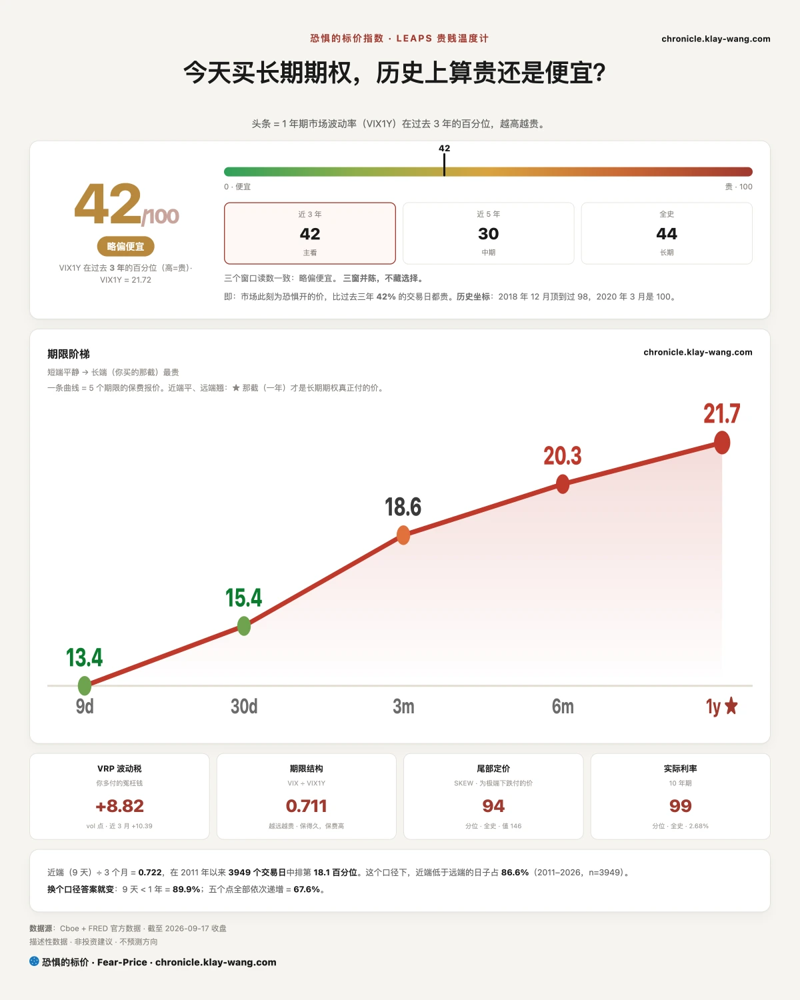
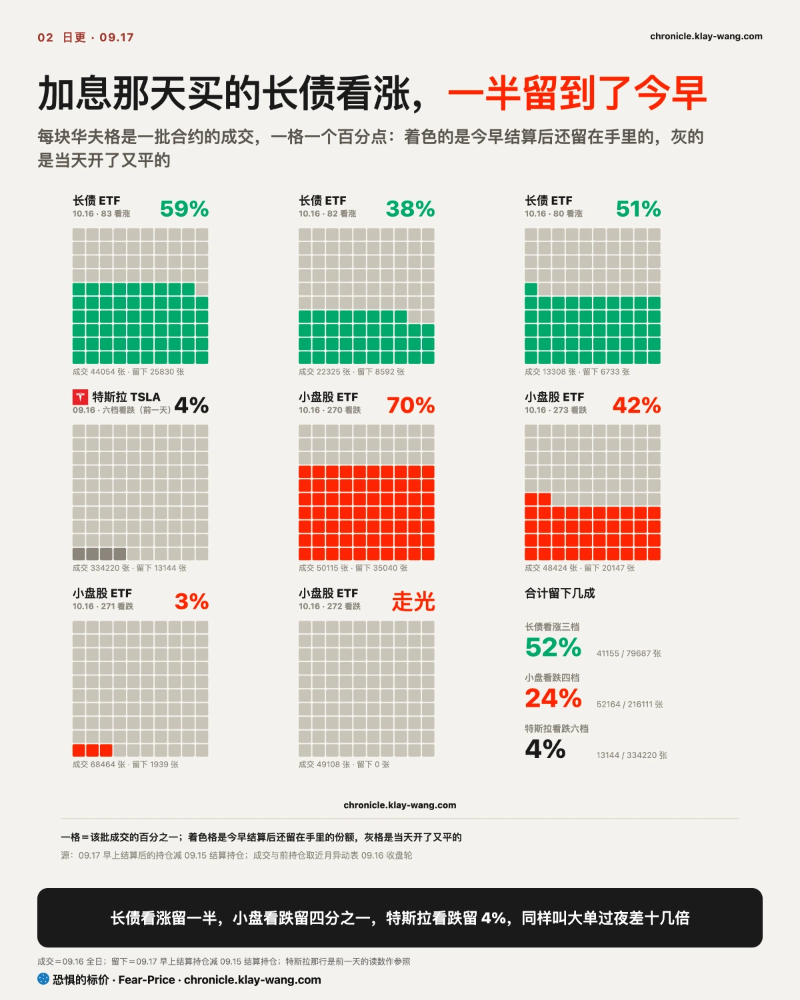
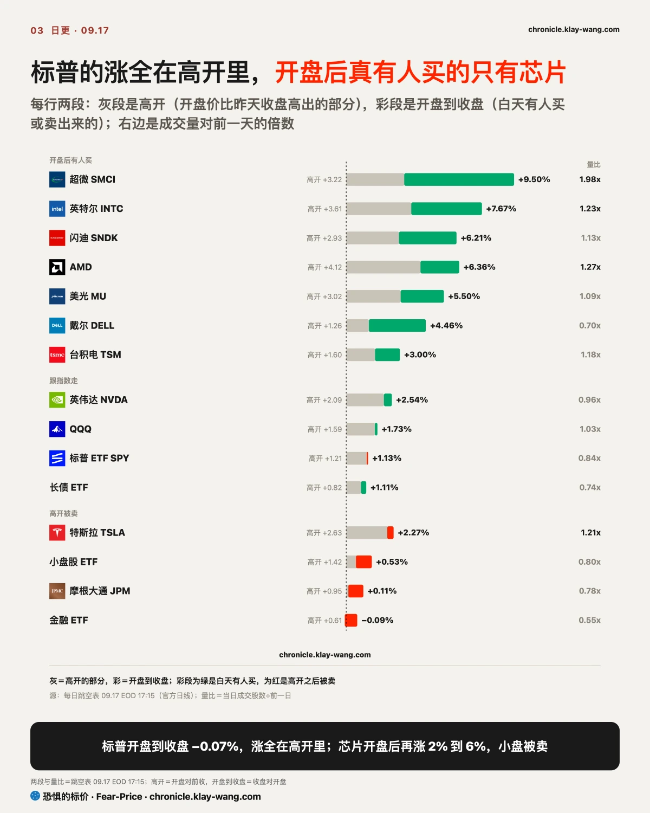
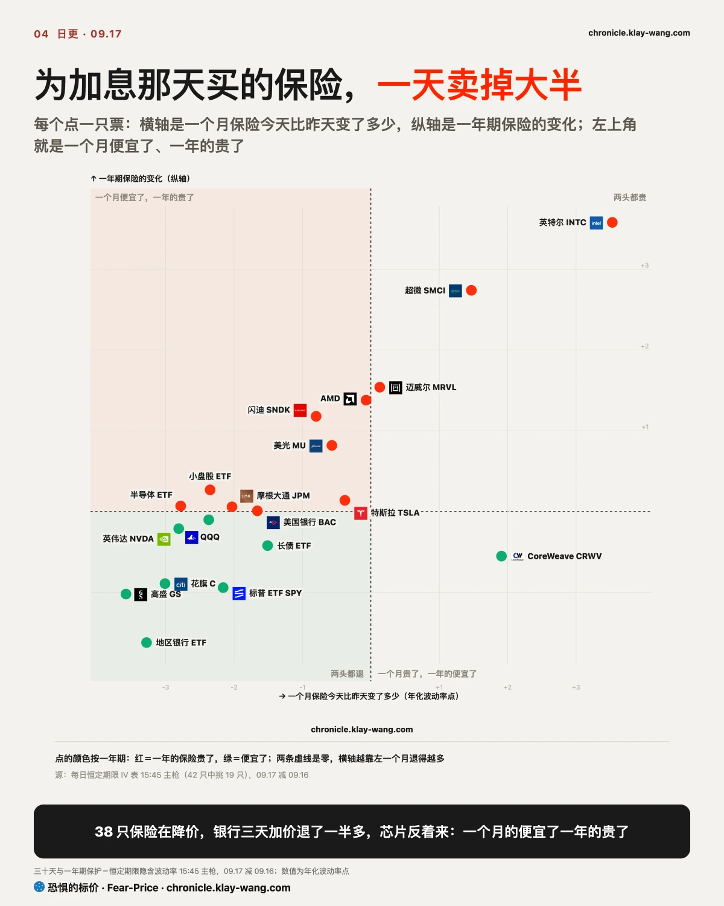
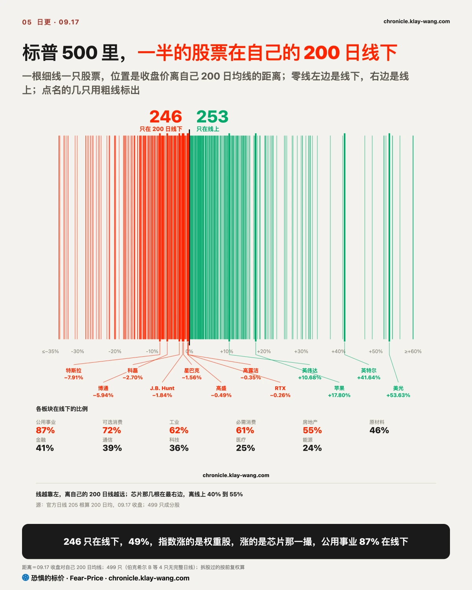

恐惧的标价指数（Fear-Price Index）· 2026-09-17 · 读数 41.5/100：一年期波动率 VIX1Y 为 21.72，处于近三年第 41.5 百分位，高即贵。逐日台账与口径 → chronicle.klay-wang.com · 转载注明：恐惧的标价指数 · Fear-Price
恐惧的标价今天 41.5，昨天是 49.3，一天掉了 7.8 个点。近三年里只有一成的日子有这么大的单日变化，给一年买保险的价钱，一天退回到了加息前一周的水平。
买保险的人在退，但市场的情绪没有好转。CNN 恐贪指数是用涨跌家数、垃圾债、期权这些市场数据算出来的情绪分，今天 28.7，2011 年以来只有 19% 的日子比今天更低；VIX 是给标普买一个月保险的价钱，今天 15.44。情绪分除以保险价钱，就是我们的 K 指数 1.86，比昨天高，意思是市场看着很担心，真掏钱买保险的人却在减少。K 要跌破 1，得 VIX 涨过 28.7，或者恐贪掉到 15.4 以下，今天两个数都离得远。对你来说，这是保险便宜的日子，历史走势在 chronicle.klay-wang.com/kindex。
给利率买保险的价钱（MOVE）退到了 76.22，离上周定的那条线只差 0.22。专门为一次大跌买的那份保险（SKEW）还在 2011 年以来第 94 分位，今天便宜的是防普通下跌的保险，防暴跌的那份还是贵的。

长债 ETF 的看涨成交昨天是看跌的五倍多，我当时留了一个问题：这些单子过夜留不留。今天早上答案出来了，留了一半。十月到期那三档昨天成交近 8 万张，今早还在手里的有 4.1 万张。这跟前一天押加息当天的特斯拉看跌是两回事，那批只留了 4%，当天开当天平。所以押长债涨的这笔钱是真的，押的是加息落地之后长期利率往下走。
长债 ETF 今天收 81.78，收在全天最高的位置。上面 82 是期权上看涨堆最多的一档，也是 50 日线，过了它那 4 万张 83 看涨才有意义；下面 80.46 是周一的低点，也是一年来的最低，破了这批钱就白留了。
小盘股十月的看跌也留了四分之一。这四批昨天是全市场成交最大的单子，今天小盘股 ETF 开盘涨 1.4%，收盘只剩 0.5%，开盘之后是跌的，留下的人白天没错。
同样是大单，差别在第二天早上还剩多少：长债看涨剩一半，小盘看跌剩四分之一，特斯拉看跌剩 4%。你在券商 App 里看到大单想跟，先看这个数，不看当天成交量。

标普今天涨 1.13%，但开盘价就已经比昨天收盘高了 1.21%。开盘到收盘反而跌了 0.07%，成交量只有昨天的八成。等权重的标普只涨 0.48%，说明涨的是权重股。为什么高开：周三议息前买的保险今天集体卖掉，VIX 从 17.71 掉到 15.44，跌了 12.8%，保险一退，指数就被推上去了。这种涨没有人在白天掏钱，你手里是指数基金的，明天开盘不跌回来才算数。
明天是季度期权到期日，标普 ETF 收 762.6，到期最多的档就在 760。下面 750 是看跌堆最多的一档，昨天的低点 749.6 正好贴着它；上面 775 是近 20 天的高点，再往上 779 是 8 月的高点。
我的判断是明天在 750 到 768 之间来回，768 过了做市商才会顺势买，过不了就是震。
开盘之后真有人买的是芯片和存储。英特尔高开 3.6%，白天又涨 3.9%，成交量是平时的 1.2 倍；超微白天再涨 6.1%，量是平时的两倍；AMD、闪迪、美光开盘后各再涨 2% 到 3%。英伟达和博通只是跟着指数走。高开之后被卖的是特斯拉和小盘股，特斯拉高开 2.6% 之后白天跌回 0.35%，小盘股 ETF 收在全天最低附近。
上周五我写过，本周被卖的是八月涨最多的那批 AI 硬件股，当时定了一个条件，加息之后半导体 ETF 和长债 ETF 同一天领涨，这条就收回。今天两个都是各自类别里的第一，收回：上周卖出去的钱又买回来了，买的正是英特尔、AMD、闪迪、美光。

我们盯的 42 只里，38 只一个月的保险今天比昨天便宜，降得最多的是银行。给 100 股高盛买一个月保险，昨天约 4180 美元，今天 3790。周一到周三银行的保费连涨了三天，今天一天退回到周二以下，折成钱等于回到了上周五。
所以昨天说加息那天被改价的是银行，保费那一半要收回：三天涨上去的保费是为议息临时买的，议息完就卖了。股价那一半没有收回，全市场涨的日子摩根大通只涨 0.11%，花旗和富国还在跌。
高盛今天的低点 922 是两个月来的最低，收盘 951 正好压在 200 日线 948 上，往上 50 日线在 1035，中间隔着 9%。
估值上高盛 13.9 倍市盈率，比近三年 89% 的时间都便宜，便宜、保费退了、又贴着 200 日线，可就是没人买。银行现在是便宜但没人要，我的看法是要等 10 月再加息的概率从 51% 往下走，那之前 948 守不守只是技术面的事，守住了也不会有人追。
标普的一个月保险（三十天保护）从 14.46 退到 12.30，比上周五还低；给利率买保险的价钱 MOVE 从 80.73 退到 76.22，离上周定的 76 只差 0.22。昨天我说股市开始为十月买保险，今天标普回到 14 以下，这半句也收回，那批保险是为明天季度期权到期日买的。
只有四只的一个月保险在涨，全是芯片。一年期的保险，芯片这一组全在涨，英特尔、超微、AMD、闪迪、美光一个不落，而指数和银行的一年期在降。同一天，芯片一个月的保险便宜了，一年的贵了，说明买芯片的人一边追涨，一边顺手买了一年后到期的保险，追的人自己也知道位置高。
高在哪里：美光离 200 日线 54%，AMD 54%，闪迪 52%，英特尔 42%。但估值上这四只是两种东西。美光 21.9 倍市盈率，近一年七成的时间比现在贵，它涨的是账，今天收 977，回踩的位置在 50 日线 927，压力在 1042。
英特尔账上还在亏，没有市盈率，市净率 6.2 倍，比它过去五年 99.8% 的时间都贵，买它的人买的是以后的账，今天最高 111 就是 20 天高点。这轮回来的钱是真的，但这个位置，如果是我，要么等回踩 50 日线，要么等明天三巫日过了这批还收在今天上方，那说明有人愿意在这个高度接。
金融 ETF 更直接。一个月内到期的看跌是看涨的七倍，还有人买了 2027 年 1 月、2027 年 12 月、2028 年 12 月三档看跌，各两万多张，赔付线比现价低 10% 到 20%。银行一个月的保险卖掉了大半，一到两年的却有人在买。为议息买的一个月保险议息完就卖，为整轮加息买的两年保险才会留着，手里有银行股的，看后面这种。

标普 500 里有 246 只收在自己的 200 日均线下方，占 49%。200 日线是过去一年的平均成本，一半股票在它下面，指数的涨只靠另一半，等权重标普只涨 0.48% 说的就是这件事。分板块看，公用事业 87% 在线下，可选消费、工业、必需消费都超过六成；芯片是另一个极端，美光、AMD、闪迪比自己的 200 日线高出五成以上。
跌破的也不只是小公司。星巴克、J.B. Hunt、RTX、高露洁、科磊今天都在自己的 200 日线下，科磊低 2.7% 最深；高盛昨天跌破，今天勉强回到线上 0.4%。手里是指数基金的，你的涨来自那几只芯片，另一半股票没跟；涨的股票越少，跌起来越急。

特斯拉盘中最多涨了 4.5%，收盘只剩 2.26%。三星试产 AI5 芯片的消息让它高开，白天被卖回一半。但期权上的钱押的全是涨：下周到期的 370 看涨成交是原持仓的近三倍，365 到 400 五档都在加，没有一档像样的看跌。
它现在夹在中间，50 日线 351 在下面托着，200 日线 398 在上面压着，今天收 366，离看涨堆最多的 370 只差一步。白天有人在卖，期权里全是买涨的，明天开盘守不守今天的低点 363，比新闻重要。
英伟达涨 2.54%，高开就占了 2.09%，白天只涨 0.44%，跟着指数走。它是这批里估值最便宜的，27.4 倍市盈率，比过去五年 99% 的时间都便宜，可期权上没有人为它一年后下注，一个月和一年的保险都在退，钱押的只是下周，下周到期 220 到 232.5 六档看涨合计 15.6 万张。便宜但没人为它花钱，这是英伟达现在的状态，跟银行像。
SpaceX 收 154.81，明天到期的 155 看涨差 19 美分。这批合约持仓六万多张，只剩一天了还报 1.74 美元，市场在赌明天开盘跳过 155。同一天有人反着来，一个月后到期的 155 看跌新开 3.9 万张，是原持仓的二十多倍，赔付线正好在现价。今天最高 156.9 就是近 20 天的高点。两边只有一边能对，手里有 SpaceX 的，看明天开盘在 155 的哪一边。
美光和闪迪是白天买出来的涨，海力士是高开的。三只买的都是两周到一个月到期的看涨，美光 1000 看涨的成交是原持仓的近四倍。英特尔 CEO 说内存价格在飙，三只一年期的保险全在涨价。
不给操作建议，只把价格换算成你能自己判断的数。
手里有银行的：高盛 13.9 倍，贴着 200 日线 948，一个月的保险今天便宜了，100 股高盛省约 390 美元。但一到两年的保险有人在大手买，防的是这一轮加息压两年银行的利润。便宜但没人要，转机看 10 月加息概率从 51% 往下走，那之前 948 守住了也不会有人追。
手里有芯片和存储的：今天的涨是白天买出来的，比高开靠得住，但美光离 200 日线 54%、英特尔市净率比五年里 99.8% 的时间都贵，这个位置如果是我，等回踩再说。追涨的人自己也在买一年期的保险，博通的保险一年里只有 4 天比今天便宜，是这批里最便宜的保险。
手里有特斯拉的：押涨的钱在 365 到 400，没有人买跌，可白天的涨被卖回了一半。跟着买 370 看涨之前，先看明天开盘守不守 363。
什么都没拿在等进场点的：今天的涨没有人在白天掏钱，指数只是高开，一半成分股还在 200 日线下，你等的那一跌没来。明天三巫日，标普大概率在 750 到 768 之间来回。